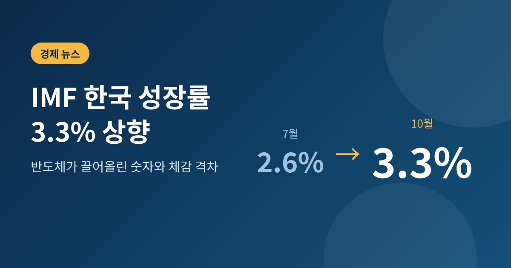
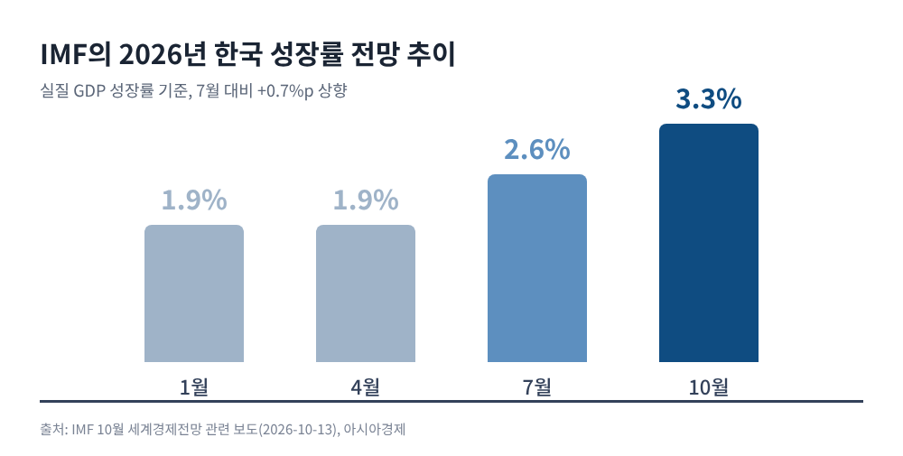
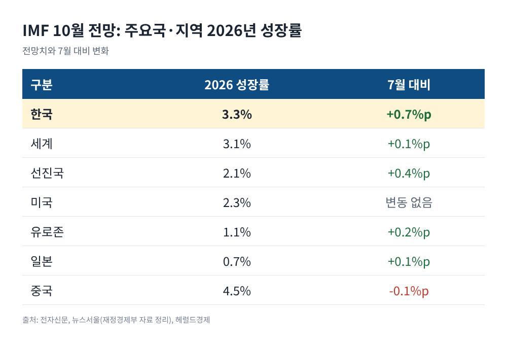
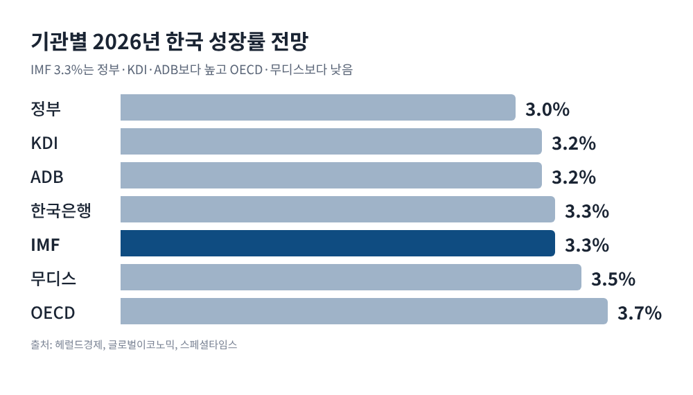
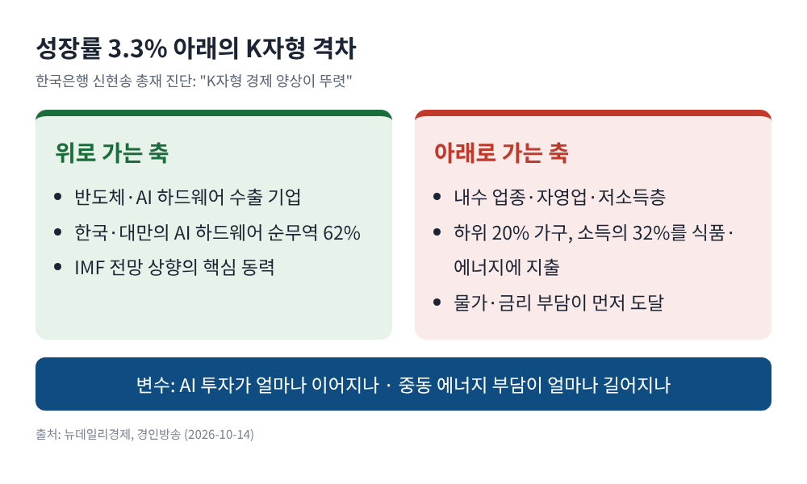

IMF 한국 성장률 3.3% 상향, 반도체가 끌어올린 숫자와 체감 격차

이번 글에서는 IMF가 10월 13일 발표한 세계경제전망에서 한국의 올해 성장률을 3.3%로 올린 일을 정리해 보겠습니다.
숫자가 어떻게 달라졌는지, 왜 올랐는지, 그리고 이 숫자가 모두의 체감으로 이어지는지까지 차례로 짚습니다.
핵심만 먼저 말씀드리면, 성장 전망은 크게 좋아졌지만 그 혜택은 고르게 퍼지지 않았다는 것이 이번 논의의 중심입니다.
3줄 요약1. IMF는 한국의 2026년 성장률 전망을 7월 2.6%에서 3.3%로, 2027년 전망을 2.5%에서 2.8%로 올렸습니다.2. 이유는 AI 투자 확산에 따른 반도체 수출 호조입니다. IMF는 이것이 중동전쟁의 충격을 상쇄한다고 봤습니다.3. 한국은행 총재는 같은 시점에 "K자형 경제"를 경고했습니다. 성장률과 체감 경기 사이에 간격이 있다는 뜻입니다.
■ 무슨 일이 있었나: 석 달 만에 0.7%p 상향
IMF는 2026년 10월 13일(화) '10월 세계경제전망(WEO)'을 공개했습니다.
이 가운데 한국의 올해 실질 GDP 성장률 전망은 3.3%였습니다. 7월의 2.6%에서 0.7%포인트 올린 수치입니다.
내년인 2027년 전망도 2.5%에서 2.8%로 0.3%포인트 높아졌습니다.
올해 IMF의 한국 전망을 시간순으로 놓으면 흐름이 분명해집니다. 1월 1.9%, 4월 1.9%, 7월 2.6%, 그리고 이번 10월 3.3%입니다.
연초와 비교하면 1.4%포인트가 올랐습니다. 두 번 연속 상향이라는 점에서도 의미가 있습니다.

상향 폭 자체도 눈에 띕니다. 이번 0.7%포인트는 세계 평균 상향 폭(0.1%포인트)과 선진국 평균(0.4%포인트)을 모두 웃돕니다.
서울신문은 주요 선진국 가운데 1위 수준이라고 전했습니다.
IMF는 4월과 10월에 전체 회원국을 대상으로 한 '주(主)전망'을, 1월과 7월에 주요 30개국 대상 '수정 전망'을 내놓습니다. 10월 전망은 올해 마지막 전망이라 시장의 관심이 높았습니다.
■ 왜 올렸나: AI 하드웨어 교역의 중심에 선 한국
IMF의 설명은 간명합니다. 보도에 따르면 보고서는 "반도체에 대한 강한 대외 수요가 중동전쟁의 부정적 영향을 상쇄"한다고 평가했습니다.
재정경제부 관계자도 상향의 원인으로 AI 하드웨어·반도체 관련 수출 호조를 꼽았습니다.
근거로 제시된 숫자가 있습니다. IMF는 한국과 대만을 AI 관련 컴퓨터 하드웨어의 핵심 교역국으로 지목했고, 두 나라가 이 분야 순무역의 62%를 차지한다고 분석했습니다.
IMF는 이런 수요가 원자재 수출국과 제조업 거점국에도 파급될 수 있다고 덧붙였습니다.
7월 상향 때도 IMF는 한국을 AI 하드웨어 순수출 상위국(한국·대만·태국·말레이시아)에 포함시켰습니다. 방향은 석 달 사이에 더 강해진 셈입니다.
세계 경제 전체의 그림도 함께 보셔야 합니다.
IMF는 2026년 세계 성장률을 3.1%로 0.1%포인트 올렸고, 2027년은 3.4%로 유지했습니다. 선진국은 2.1%로 0.4%포인트 올랐고, 미국은 2.3%로 그대로입니다. 중국은 4.5%로 0.1%포인트 내렸습니다.
중동전쟁이 길어지고 무역 갈등이 이어지는데도 AI 투자가 세계 경제를 받치고 있다는 것이 IMF의 큰 판단입니다.

■ 숫자가 말하는 위상: 세계 평균 추월과 1인당 GDP 4만 달러
이번 전망에서 한국 정부가 특히 강조한 대목은 세계 평균과의 비교입니다.
한국의 3.3%는 세계 3.1%보다 0.2%포인트 높습니다. 이형일 부총리 겸 재정경제부 장관은 X(옛 트위터)에서 코로나19가 닥친 2020년을 제외하면 2010년 이후 16년 만이라고 설명했습니다.
참고로 아시아경제는 같은 사실을 "2020년 이후 6년 만"이라고 표현했습니다. 2020년을 포함하느냐에 따른 표현 차이이며, 한국은 2021년부터 5년 연속 세계 평균에 미치지 못했습니다.
IMF 전망으로 환산한 1인당 GDP도 화제입니다. 2025년 3만6,408달러로 추산된 수치가 2026년 4만3,512달러로 올라, 사상 처음 4만 달러를 넘을 전망입니다.
명목 GDP는 2조2,458억 달러로 처음 2조 달러를 넘길 것으로 봤습니다. 이 수치들은 달러로 환산한 값이어서 환율 가정의 영향을 받는다는 점은 감안하셔야 합니다.
비교 대상도 흥미롭습니다. 올해 대만은 4만3,951달러로 한국을 근소하게 앞서지만, 2027년에는 한국이 약 1,863달러 앞설 것으로 전망됐습니다. 일본과는 올해 한국이 8,112달러 우위입니다.
■ 다른 기관과 견주면: 높지만 최고는 아니다
3.3%가 낙관의 극단은 아닙니다. 국내외 기관 전망을 나란히 놓으면 위치가 보입니다.

정부 전망치 3.0%는 IMF보다 낮습니다. KDI와 ADB는 3.2%, 한국은행은 3.3%이고, 무디스는 3.5%, OECD는 3.7%입니다. 해외 투자은행 8곳의 평균은 4월 2.4%에서 9월 3.5%로 여섯 달 연속 올랐다고 합니다.
예전에는 올해 성장률이 1%대 후반에 머문다는 시각이 많았습니다. 지금은 대부분의 기관이 3%를 훌쩍 넘기는 쪽으로 옮겨 왔습니다.
2027년은 다릅니다. IMF가 2.8%로 보는 반면 정부와 KDI는 2.2%, ADB는 2.3%, OECD는 2.6%이고 한국은행은 2.9%입니다. 올해의 호조가 내년에도 이어지는지에 대한 판단은 기관마다 갈립니다.
■ 쟁점: 성장률은 오르는데 체감은 왜 다른가
이번 발표와 같은 날 나온 한국은행 신현송 총재의 발언이 오히려 더 주목받았습니다.
신 총재는 10월 13일 IMF 대담과 14일 태국 방콕에서 열린 CNN 패널 토론에서 한국이 AI 투자 확대와 중동전쟁이라는 두 흐름의 교차점에 있다고 말했습니다.
AI 경제의 긍정적 효과가 전쟁의 부정적 영향을 압도한다고 평가하면서도, "실제로 한국은 K자형 경제 양상이 뚜렷하게 나타나는 상황"이라고 진단했습니다.
K자형 경제란, 일부 산업과 계층은 빠르게 성장하고 다른 쪽은 뒤처지는 구조를 말합니다.
반도체와 IT 기업은 투자 확대의 수혜를 누리지만, 상당수 내수 업종과 지역 경제는 회복을 체감하지 못한다는 것입니다.
물가도 같은 문제와 맞닿아 있습니다. 보도된 발언에 따르면 중동전쟁으로 에너지 가격이 오르는 데다 반도체 경기에 따른 수요 확대가 겹쳐, 두 요인 모두 물가를 밀어 올립니다.
필수재 가격이 오르면 지출을 줄이기 어려운 저소득층이 더 크게 타격을 받습니다. 소득 하위 20% 가구는 소득의 32%를 식품과 에너지에 쓴다고 알려졌습니다.
KDI 10월 경제동향에 따르면 통신비 기저효과를 제외한 9월 물가상승률은 전월 2.7%에서 3.1%로 올랐고, 공급 측 압력으로 기조적인 물가 상승세가 넓어지고 있다는 진단입니다.

신 총재는 금융 불균형에 대해서도 "위험이 누적된 후에 뒤늦게 대응한다면, 이는 거품을 터뜨리는 것과 같다"고 경고했습니다. 금융취약성지수(FVI)가 장기 평균인 46 안팎이라는 설명도 덧붙였습니다.
한국은행은 7월 2.50%에서 2.75%로, 8월 3.00%로 기준금리를 연달아 올렸습니다. 신 총재는 물가가 목표 수준으로 수렴한다는 확신이 들 때까지 긴축 기조를 유지하겠다는 입장을 밝혔습니다. 다음 금융통화위원회는 10월 22일입니다.
정부의 인식도 크게 다르지 않습니다. 재정경제부는 중동전쟁 장기화와 물가·금리 상승에 따른 민생 부담, 양극화와 잠재성장률 둔화 같은 구조적 문제가 남아 있다고 밝혔습니다. 주거, 일자리, 서민금융을 3대 핵심 사회정책으로 삼아 대응하겠다는 계획입니다.
■ 이해관계별로 읽으면
같은 3.3%라도 서 있는 자리에 따라 의미가 달라집니다.
- 정부: 세계 평균 추월과 1인당 GDP 4만 달러는 정책 성과로 내세울 만한 지표입니다. 다만 민생 부담을 함께 언급한 만큼 숫자만으로 평가받기는 부담스러운 국면입니다.
- 한국은행: 성장 전망이 좋아질수록 금리 인상 기조를 설명하기는 수월해질 수 있지만, 고금리를 견뎌야 하는 취약 차주의 부담은 커집니다. 신 총재는 필요하면 채무 조정도 가능하다고 하면서 도덕적 해이도 경계해야 한다고 했습니다.
- 수출 기업: 반도체와 AI 하드웨어 업종은 직접 수혜를 입습니다. 반면 AI 투자 열기가 식으면 전망의 전제가 흔들립니다.
- 가계와 자영업자: 성장률 상향이 곧바로 소득 증가로 이어지지는 않고, 물가와 금리 부담이 먼저 닿습니다.
한 가지 짚을 대목이 더 있습니다. IMF는 한국의 일반정부 부채비율 전망을 2026년 46.1%로, 4월 전망 54.4%보다 8.3%포인트 낮췄습니다. 다만 비율이 내려갔다고 해서 국가부채 규모가 줄었다거나 가계 형편이 나아졌다는 뜻은 아니라는 지적이 함께 나왔습니다.
■ 앞으로 볼 변수
IMF 보고서는 세계 경제의 하방 위험이 7월보다 줄었지만 여전히 우세하다고 봤습니다. 중동 긴장과 무역 분절, 원자재 변동성과 물가 압력, 그리고 AI 생산성 기대의 재평가가 주요 위험으로 꼽혔습니다.
이 전망은 호르무즈 해협이 다시 열리고 에너지·물류 여건이 점차 정상화된다는 가정 위에 서 있습니다. 시점은 매체마다 표기가 엇갈리는 만큼, 가정이 어긋날 수 있다는 점만 기억해 두시면 좋겠습니다.
한국에는 변수가 둘로 압축됩니다. 하나는 대규모 AI 투자가 얼마나 오래 이어지느냐입니다. 신 총재도 한국 경제의 향방이 여기에 달려 있다고 봤습니다. 다른 하나는 중동전쟁에 따른 에너지 부담이 얼마나 길어지느냐입니다.
IMF는 정책 권고로 통화정책의 물가안정 최우선, 취약계층에 대한 한시적·선별적 지원, 노동이동성 제고와 규제 효율화를 제시했습니다.
가까운 일정으로는 10월 22일 금융통화위원회가 있습니다. 성장률 상향과 물가 압력, 금융 불균형이 금리 판단에 어떻게 반영될지 지켜볼 대목입니다.
정리하면 이렇습니다.
IMF의 3.3%는 한국 수출 경쟁력에 대한 분명한 인정이지만, 그 성장이 어디로 흘러가는지는 별개의 질문으로 남았습니다.
"성장률은 지표이고, 체감은 생활입니다."
두 가지가 같은 방향으로 움직일 때 비로소 좋은 숫자라고 부를 수 있을 것입니다. 앞으로 발표될 고용과 물가, 가계 지표를 이번 전망과 함께 놓고 읽어 보시기를 권합니다.
※ 이 글은 공개된 보도와 발표 자료를 바탕으로 한 정보 제공용 해설이며, 투자 권유가 아닙니다. 경제 전망은 이후 상황에 따라 달라질 수 있고, 투자 판단과 그 결과는 투자자 본인에게 있습니다.
출처: IMF 10월 세계경제전망 관련 보도(서울신문, 아시아경제, 전자신문, 세계일보, 스페셜타임스, 글로벌이코노믹, 헤럴드경제, 뉴데일리경제, 경인방송, 코리아타임스) 및 재정경제부 발표 요약, 2026-10-13~14 기준.